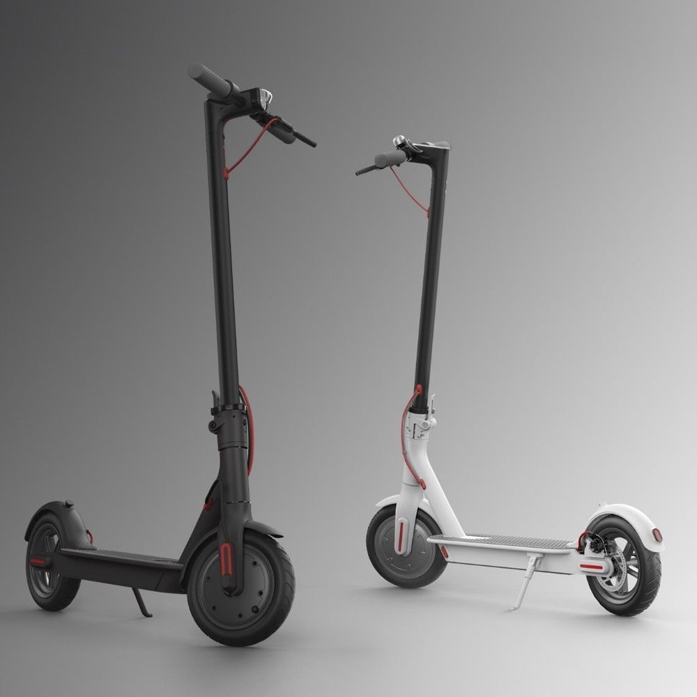
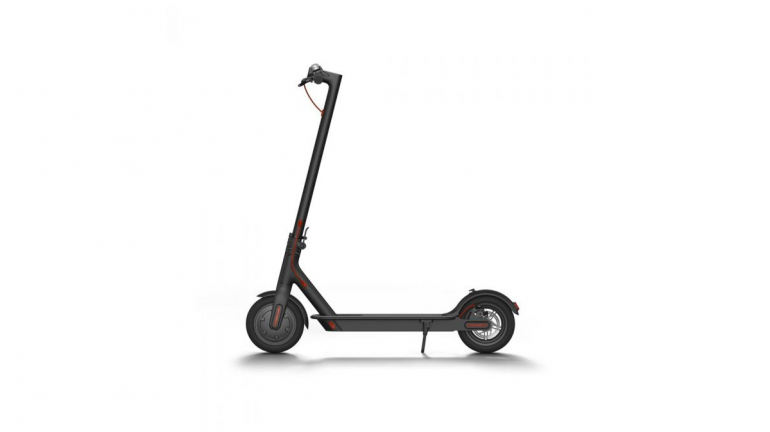

XIAOMI M365
Elektryczna hulajnoga MiJia ma minimalistyczną konstrukcję, w której każdy detal działa na rzecz wygody i łatwości użytkowania. Solidna i składana konstrukcja, długa stabilna kierownica i pneumatyczne opony pochłaniające wstrząsy zapewniają najbardziej komfortowe i ekscytujące doznania podczas jazdy.

1999,-

Od strony konstrukcyjnej, sama hulajnoga sprawia wrażenie solidnie zbudowanej – rama wykonana jest z lotniczego aluminium, podstawa (pod którą znajdują się ogniwa baterii) jest szeroka i stabilna, a na felgach znajdziemy 8-calowe opony. Elementy gumowe czy plastikowe, które znajdziemy na podstawie, w rączkach czy błotnikach również nie wyglądają na tanie. Hulajnoga ma też wbudowane bardzo jasne oświetlenie przednie i tylne, dzwonek i prosty wskaźnik stanu naładowania baterii. Całość jest składana i można w miarę wygodnie przenosić – mówię w miarę, bo hulajnoga waży ok. 13 kg.
Jak na urządzenie elektryczne przystało, z hulajnogą możemy komunikować się z pomocą aplikacji. Do wyboru mamy Mi Home oraz Ninebot – jednak to druga apka bardziej przypadła mi do gustu z uwagi na bardziej przejrzysty interfejs.
COPYRIGHT 2018, ALL RIGHTS RESERVED. P. KAJETAN 41488